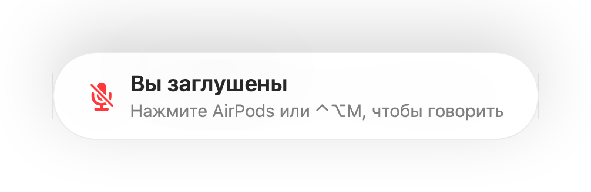

Напоминание «Вы заглушены» для любых приложений и звонков
Zoom предупреждает, если вы говорите с выключенным микрофоном. Большинство других сервисов этого не делают, а в веб-звонках такой функции почти нет. Вы минуту что-то объясняете и только потом замечаете, что все ждут вашего ответа.
Muffle замечает речь, когда микрофон заглушён, и показывает напоминание в любом приложении. Если в звонке используются AirPods или наушники, программа отслеживает только уровень громкости встроенного микрофона Mac. Никакой звук не записывается.
Как включить напоминание
- 1
Установите Muffle и разрешите доступ к микрофону.
- 2
Убедитесь, что в меню «Настройки Muffle» включён пункт «Напоминать, когда я говорю с заглушённым микрофоном».
- 3
Подключитесь к звонку в AirPods или гарнитуре и заглушите микрофон.
- 4
Начните говорить. На экране появится напоминание «Вы заглушены».

- Подключились к совещанию, оставаясь с заглушённым микрофоном после прошлого разговора? Muffle напомнит об этом сразу в начале звонка.
- Стук по клавиатуре не активирует предупреждение. Muffle реагирует только на уверенную речь голосом.
Вопросы и ответы
Работает ли напоминание со встроенным микрофоном Mac?
Функция работает, когда для звонка выбраны AirPods или наушники. Если звонок идёт через собственный микрофон Mac, этот микрофон заглушается и не может уловить ваш голос.
Записывается ли звук разговоров?
Нет. Muffle лишь измеряет уровень громкости и никогда не сохраняет и не передаёт звук.